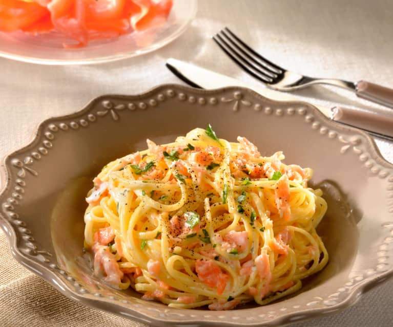

Linguine au saumon fumé et à l'aneth

Pour épater les filles et leurs palais, voici une recette rapide et simple
Ingredients
Un paquet de linguine
Du saumon fumé, pas trop, c'est reuch
De la crême fraîche
Aneth
Citron
Sel et poivre
option: Des champignons frais
Du parmesan
Préparation
- Dosage: à la lure lure
- Faire cuire les pâtes, ça tu sais
- dans les pâtes égouttées et biens chaudes (option: mettre d'abord les champignons découpés),
ajouter tous les ingrédients et bien mélanger
- Assaisonner
- Profiter
Home